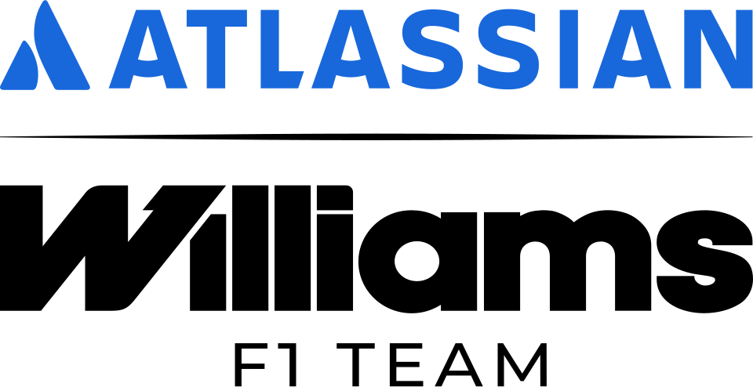

아틀라시안 윌리엄스 포뮬러 원 팀 Williams Racing
아틀라시안 윌리엄스 포뮬러 원 팀(Williams Racing)은 영국 그로브에 본사를 둔 포뮬러 원 모터레이싱 팀이자 컨스트럭터이다. 정식 명칭은 윌리엄스 그랑프리 엔지니어링 리미티드이다.
최종 업데이트

아틀라시안 윌리엄스 포뮬러 원 팀은 어떤 브랜드인가
윌리엄스는 영국 그로브에 위치한 포뮬러 원 모터레이싱 팀이자 컨스트럭터로, 정식 명칭은 윌리엄스 그랑프리 엔지니어링 리미티드이다. 1977년 프랭크 윌리엄스와 패트릭 헤드가 설립했으며, 이전에 운영하던 프랭크 윌리엄스 레이싱 카와 울프-윌리엄스 레이싱이 성공을 거두지 못한 뒤 새롭게 회사를 세웠다.
80년대와 90년대에 거둔 성공으로 F1 역사에서 페라리에 이어 두 번째로 많은 컨스트럭터 타이틀을 보유한 명문팀으로 알려져 있다. 그러나 2014년 하이브리드 파워트레인 도입 이후 경쟁력을 점차 잃으며 성적이 하락했고 2019년 시즌에는 단 1점만을 획득했다.
코로나19 범유행으로 인한 재정적 압박 속에 2020년 메인 스폰서 ROKiT와의 계약이 파기되며 팀 매각 절차에 들어갔고, 같은 해 미국계 투자회사 도릴턴 캐피탈이 팀을 인수했다.
아틀라시안 윌리엄스 포뮬러 원 팀은 어떻게 시작되고 성장했나
윌리엄스는 1977년 프랭크 윌리엄스가 설립했다. 그는 이전에 프랭크 윌리엄스 레이싱 카(1969-1975)와 울프-윌리엄스 레이싱(1977)이라는 팀을 운영했으나 성공을 거두지 못했다.
이에 영국의 엔진 공학자 패트릭 헤드와 함께 현재의 회사를 설립했다. 이후 80년대와 90년대에 거둔 성공으로 F1 역사에서 페라리에 이어 두 번째로 많은 컨스트럭터 타이틀을 획득한 명문팀으로 자리매김했다.
아틀라시안 윌리엄스 포뮬러 원 팀의 브랜드 아이덴티티는 무엇인가
페라리에 이어 F1 역사상 두 번째로 많은 컨스트럭터 타이틀을 보유한 명문팀이며, 창립자의 이름을 딴 'FW' 섀시 명명 규칙으로 구분된다.
아틀라시안 윌리엄스 포뮬러 원 팀의 대표 제품과 서비스는 무엇인가
윌리엄스는 포뮬러 원 그랑프리에 출전하는 레이싱 머신을 설계하고 제작하는 컨스트럭터이다. 정식 명칭인 윌리엄스 그랑프리 엔지니어링 리미티드에서 알 수 있듯이 그랑프리 레이싱을 위한 엔지니어링을 전문으로 한다.
팀이 제작하는 모든 F1 섀시의 이름에는 'FW' 뒤에 숫자가 붙는 명명 규칙을 사용하는데, FW는 팀 창립자인 프랭크 윌리엄스의 약자를 뜻한다.
아틀라시안 윌리엄스 포뮬러 원 팀은 지금 어떤 상태인가
2020년 코로나19 범유행에 따른 재정적 압박 속에 메인 스폰서였던 ROKiT와의 계약이 파기되며 팀 매각 절차에 들어갔고, 같은 해 8월 21일 미국계 투자회사 도릴턴 캐피탈이 팀을 인수했다. 창업자 프랭크 윌리엄스와 감독을 맡았던 딸 클레어 윌리엄스는 2020년 이탈리아 그랑프리를 끝으로 경영진에서 물러났으며, CEO였던 마이크 오드리스콜도 은퇴 의사를 밝혔다.
자주 묻는 질문
아틀라시안 윌리엄스 포뮬러 원 팀는 어느 나라 브랜드인가요?
아틀라시안 윌리엄스 포뮬러 원 팀는 영국의 모빌리티 브랜드입니다.
아틀라시안 윌리엄스 포뮬러 원 팀는 언제 설립되었나요?
아틀라시안 윌리엄스 포뮬러 원 팀는 1977년 설립되었습니다.
아틀라시안 윌리엄스 포뮬러 원 팀의 브랜드 아이덴티티는 무엇인가요?
페라리에 이어 F1 역사상 두 번째로 많은 컨스트럭터 타이틀을 보유한 명문팀이며, 창립자의 이름을 딴 'FW' 섀시 명명 규칙으로 구분된다.
아틀라시안 윌리엄스 포뮬러 원 팀의 대표 제품은 무엇인가요?
윌리엄스는 포뮬러 원 그랑프리에 출전하는 레이싱 머신을 설계하고 제작하는 컨스트럭터이다.
아틀라시안 윌리엄스 포뮬러 원 팀는 어느 기업이 소유하고 있나요?
2020년 코로나19 범유행에 따른 재정적 압박 속에 메인 스폰서였던 ROKiT와의 계약이 파기되며 팀 매각 절차에 들어갔고, 같은 해 8월 21일 미국계 투자회사 도릴턴 캐피탈이 팀을 인수했다.
아틀라시안 윌리엄스 포뮬러 원 팀의 창업자는 누구인가요?
아틀라시안 윌리엄스 포뮬러 원 팀의 창업자는 프랭크 윌리엄스, 패트릭 헤드입니다(위키데이터 기준).
아틀라시안 윌리엄스 포뮬러 원 팀의 본사는 어디에 있나요?
아틀라시안 윌리엄스 포뮬러 원 팀의 본사는 그로브에 있습니다(위키데이터 기준).
출처와 검증
아틀라시안 윌리엄스 포뮬러 원 팀 관련 참고: 공식 웹사이트 · 위키데이터 Q171337 · 한국어 위키백과 · 영어 위키백과. 브랜드명은 한글과 원어를 함께 표기하되 데이터에 없는 표기는 만들지 않습니다. 기원 국가·설립연도는 검수된 정의문에서 확인된 값을 우선하고, 없을 때만 공식 웹사이트 URL이 일치하는 위키데이터 개체의 값을 씁니다. 위키데이터 값은 2026-09-26 기준입니다.